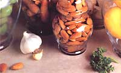
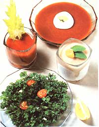

When you're not quite up to snuff, give Mother Nature a chance to clear things up before you run to the pharmacy.
Even the healthiest bodies occasionally get out of whack. Everyday ailments-colds, sore throats, headaches, sinus trouble, constipation-afflict us all from time to time. And while there are lots of nonprescription remedies available, many have drawbacks. Some medications-such as nasal sprays and laxative-scan be addictive. Others (cold preparations, for example) contain combinations of ingredients designed to treat a whole range of symptoms that you may or may not have. A few are considered flat-out ineffective by the FDA. And a great many have undesirable side effects!
But you don't have to haunt the aisles of your corner drugstore the next time you're under the weather. Check out your produce bin instead! Fresh vegetables-as well as fruits and grains-have long-established medicinal properties that can alleviate the symptoms of minor illnesses.
I've put together a few concoctions that are good for what ails you. And rather than side effects, my natural medicines have side benefits,. They provide good eating and sound nutrition.
Do you feel a cold coming on? Get your vitamin C from the rose hips in Super-C Soup or from Ascorbic Acid Ice Milk. Suffering from a cough or a sandpaper throat? The soothing honey-and-garlic blend I call Nature's Penicillin has mild antiseptic, expectorant, and (some argue) antibiotic qualities. Sinuses acting up? Sgt. Pepper's Sinus Cure will help unclog your stuffy nose. Headache? Down a few Almond Aspirins; they're full of salicylates-as in salicylic acid, commonly known as aspirin-and they contribute substantial calcium, potassium, and B vitamins to your achy body. Constipated? I'd suggest Ex-Flax or Fruit 'N' Bran Balls. You say you're just feeling generally down and out? Try one of my high-vitamin pick-me-ups. Parsley Salad is packed with vitamins A and C and has generous amounts of calcium, potassium, and fiber . . . and B-8 Juice contributes goodly portions of A and C along with its dose of B vitamins.
1 medium bunch parsley
1 small clove garlic
2 tablespoons olive oil
1 /2 lemon
Trim stems off parsley and cut it into bite-sized pieces before placing the greens on two salad plates. Chop garlic very fine and sprinkle it over parsley, then dribble one tablespoon of oil and the juice of 1/4 lemon over each plate. Stir lightly.
Each serving contains 150 calories, 5,102 IU vitamin A, 113 mg vitamin C, 470 mg potassium, 38 mg calcium, 2 g protein, 7 g carbohydrate, 14 g fat.
8 ounces pitted dates
1 /2 cup boiling water
1 cup cold water
1 cup milk or yogurt
1 teaspoon grated lemon peel
4 teaspoons lemon juice
1 to 2 teaspoons powdered vitamin C
Blend dates and boiling water until dates are pureed. Stir in other ingredients and freeze until almost firm. Beat the mixture until smooth, then turn it into a 9" X 9" X 2" pan. Cover the pan with plastic wrap and freeze until firm.
The recipe contains 715 calories, 236 mg vitamin C, 110 IU vitamin A, 430 mg calcium, 1,859 mg potassium, 14 g protein, 179 g carbohydrate, and 1 g fat. Note: Figures are based on skim milk; using whole milk or yogurt would change the calorie and fat content.
1 cup fresh orange juice
1/4 teaspoon cayenne pepper
1/2 green pepper
Blend all ingredients. The recipe contains 114 calories, 205 mg vitamin C, 587 mg potassium, 2 g protein, 26 g carbohydrate.
1 cup pitted prunes
1 cup raisins
1 cup finely grated carrot
3 teaspoons flax seeds
Put all of the ingredients through a food grinder (add a little boiling water if they stick). Form the mixture into tiny balls and roll them in powdered carob or powdered milk spiked with cinnamon. Chill, and take three or four a day as needed.
Note: Be sure to drink plenty of water with this (or any similar) laxative, or it may have an opposite effect to the one desired.
The recipe contains 780 calories, 215 mg calcium, 10 mg iron, 14,300 IU vitamin A, 99 mg sodium,.34 mg B 1 , .39 mg B 2 , 3.5 mg niacin, 8 g protein, 206 g carbohydrate, and 1 g fat.
1 cup seedless rose hips
1 quart water
2 tablespoons honey (or more for a sweeter soup)
1/2 teaspoon ground cinnamon yogurt or sour cream
Soak rose hips in water overnight. The next day, simmer the rose hips, water, honey, and cinnamon for 30 minutes. Remove from the heat, cool slightly, and whirl in a blender until smooth. Chill and serve with yogurt or sour cream, if desired.
This recipe, without the yogurt or sour cream topping, contains 150 calories and 5,600 mg vitamin C. Note: When the soup is cooked, it will lose some of the vitamin C content listed above. To minimize the loss, don't simmer the soup longer than 1/2 hour, and keep a lid on the saucepan.
24 cloves of garlic raw honey
Peel the garlic cloves and put them in a medium-sized jar; add honey a little at a time over a couple of days until the jar is full, then set it in a sunlit window until the garlic has turned somewhat opaque and the honey tastes strongly of garlic. Take a teaspoon every few hours or whenever necessary.
One tablespoon contains 70 calories and 36 g carbohydrate.
2 cups vegetable cocktail juice
1 to 3 teaspoons nutritional yeast
Process ingredients in the blender until smooth. (Note: Some brands of yeast taste better than others; shop around for the one that you prefer.) Variations: For additional nutrition, add kelp, vitamin C powder, or dry vegetable flakes.
Recipe contains 90 calories, 2,500 IU vitamin A, 30 mg vitamin C, 1.6 mg B 1 , 1.6 mg B 2 , 1.6 mg B 6 , 1.3 mcg B 12 , 6 g protein, 19 g carbohydrate.
1 cup honey
3/4 cup whole raw almonds
1/2 to 1 cup unsweetened coconut (as needed)
Heat and stir the honey until it reaches the firm ball stage (240°F). Using tongs, quickly dip each nut into the hot honey, and then into the coconut. Set aside on wax paper until dry.
This recipe contains 1,839 calories, 253 mg calcium, 1,093 mg potassium, .9 mg B 2 , 3 mg niacin, 21 g protein, 583 g carbohydrate, 79 g fat (62 g saturated fat).
1 cup dried, pitted prunes
1 cup seedless raisins
1 cup dried black figs
2 teaspoons wheat bran
Mix fruits in a bowl, then put through a food grinder twice (add a little boiling water if the ingredients stick). Form the mixture into walnut-sized balls, roll in wheat germ, and store in the refrigerator.
Note: As with Ex Flax, be sure to drink plenty of water with this laxative, or it may have an opposite effect to the one desired.
This recipe contains 1,292 calories, 526 mg calcium, 18 mg iron, 2,330 IU vitamin A, 6.7 g protein, 334 g carbohydrate, and 3.4 g fat.
|
 FRANCES SHERIDAN GOULAR |
 |
|